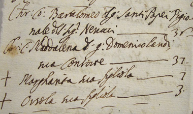
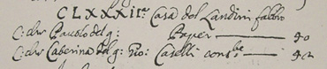
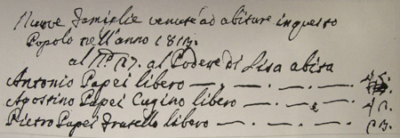
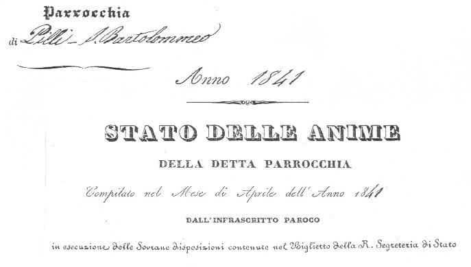
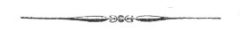
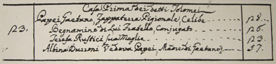
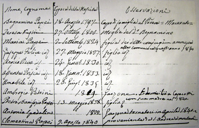
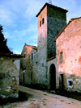

GLI STATI DELLE ANIME
In forza di una disposizione adottata durante il
Concilio di Trento del 1563, tutte le parrocchie,
probabilmente per evitare matrimoni tra consanguinei, furono
tenute ad istituire e ad aggiornare alcuni libri, detti
parrocchiali, dove venivano segnati i battesimi, le cresime,
i matrimoni, nonchè i decessi che avvenivano nel territorio
della loro cura.
Successivamente a questi registri, si affiancarono gli
"Stati delle Anime", che costituirono un vero e proprio
censimento delle famiglie della comunità, stilato dal
pievano in occasione della benedizione pasquale delle case.
Qui erano riportate le generalità del capofamiglia,
della moglie, dei figli, dei fratelli e di chiunque abitasse
nella casa, con specificata l'età (anche se spesso
approssimativa), l'occupazione e i relativi gradi di
parentela.
Facendo riferimento a questi documenti ecclesiastici,
spesso difficili da decifrare, vuoi per il linguaggio del
testo talvolta in latino, vuoi per lo stato della carta
sovente deteriorata, abbiamo cercato di ricostruire, seppur
faticosamente, la storia di quasi 500 anni della famiglia
Papei. E il lavoro sarebbe stato ancora più completo se non
fossero andati perduti tanti manoscritti.
Da quello che ci è stato possibile ricavare, abbiamo
constatato che i Papei "toscani" provenivano da Massa
Marittima e da Belforte e che già alla fine del 1700 si
erano ormai tutti stabiliti nelle vicinanze di Siena.

Massa Marittima nella seconda metà del Seicento
Infatti oltre al ramo principale, che viveva intorno a
Barontoli, se ne trova un altro che trasferitosi da Torri,
nel 1798 abitava a Sant'Andrea a Montecchio, poi nella prima
decade dell'800 alle Ville di Corsano, successivamente a
S.Carlo (gruppo di case vicino alla colonna di S.Marco) e
infine, come abbiamo appreso dagli Stati delle Anime della
Curia Vescovile di Colle val d'Elsa, nella Montagnola
Senese.
Questo ramo secondario, che aveva come stipite
Gaetano, si estinse fra gli anni '20 e '30 del Novecento,
con la morte di Angelo che non prese mai moglie.
Agostino, avo di noi tutti Papei, si trasferì invece a
Bruccianello (o Poggiarello), in un podere del cav. Antonio
Palmieri, come risulta dai libri che fino a poco tempo fa
erano custoditi nella parrocchia di S.Bartolomeo a Pilli e
grazie ai quali è stato possibile risalire alla composizione
della famiglia durante il XIX secolo.
Dove è stato necessario, per favorire la lettura degli
Stati delle Anime, abbiamo corretto gli anni dei censiti: in
realtà, o per errore del parroco o più verosimilmente perchè
neppure gli interessati sapevano con precisione la loro data
di nascita, a volte l'età era sbagliata.
L'approssimazione
poteva essere anche di diversi anni e curiosamente quasi
sempre in più, tanto da far pensare che i Papei di allora
portassero veramente male la loro età!
Il primo Stato delle Anime dove appare la famiglia
Papei fu compilato il 22 novembre 1672 da Santi Bigelli,
curato di Torri.
Ricordiamoci però che novembre era un mese inusuale
per effettuare i censimenti, che, come abbiamo poc'anzi
accennato, si redigevano durante il periodo pasquale. In
questo caso tuttavia, ne venne prescritto uno straordinario
dal Granduca Cosimo III, al fine di conoscere a quanto
ammontava la popolazione che governava e come questa era
distribuita.
Senza considerare le lacune e gli inevitabili errori
commessi dai parroci, si constata che agli inizi del 1673
ufficialmente la Diocesi di Siena contava 36.684 anime, di
cui 18450 uomini e 18234 donne. Per quanto concerneva Torri
gli abitanti uomini erano 109, mentre le donne 121.
Fra questi, escludendo la moglie di Bartolomeo, nata
Landi, c'erano almeno tre Papei che abitavano, a pigione,
nel podere detto "Porta":
|

Bartolomeo del fu Santi Papei Pigionale del Sig Nerucci anni ____ 36
Maddalena del fu Domenico Landi sua consorte________________ 37
Margherita sua figliola________________________________________ 7
Orsola sua figliola____________________________________________ 3
|
Sempre sul finire del 1672, nello Stato delle Anime
del Comune di Sovicille, località "il Castello", abbiamo
trovato che "in altra casa de'Signori Tegliacci, in altro
appartamento" alloggiavano:
Agostino Testi 47
Margarita Papei moglie 40
Laura figlia che stà in Siena per serva 17
Domenico figlio 12
Gio Batta figlio 10
Giuseppe figlio 8
Sfogliando i nostri appunti, ci accorgiamo che
Margherita è la stessa che nel 1654 si era sposata a Torri
in prime nozze con Mattio Frullani: dal loro matrimonio
nacque Laura.
Queste descrizioni delle "anime" della città e del
contado di Siena si svolsero fra il novembre 1672 e il
gennaio 1673 e poi riepilogate dai curati in numerose "carte
sciolte" che il sig. Luigi Bichi, con pazienza certosina, è
riuscito a riordinare e catalogare.
Così ci è stato possibile verificare che un solo Papei
abitava a Siena: Pavolo, fratello di quel Domenico che ebbe
dei seri guai con la giustizia e che fu condannato
all'umiliante pena dell'esilio: questa potrebbe essere la
ragione per la quale Domenico non appare in quegli anni fra
gli abitanti di Siena. Ben diverso invece il motivo
dell'assenza di Agostino dai registri della popolazione,
perchè pare abitasse ancora a Belforte.
Tornando a Paolo (o Pavolo), abbiamo avuto la conferma
che non ebbe figli e che abitava nel territorio che oggi
trovasi nella contrada della Selva e precisamente, in
affitto, nella 182° casa "del Landini fabbro".
- PARROCCHIA DI S.GIOVANNI BATTISTA A SIENA -
 |
Peccato che i pievani non avessero la buona abitudine
di conservare gli Stati delle Anime, infatti per trovarne un
altro dove ricomparissero i Papei, abbiamo dovuto aspettare
un secolo.
Si tratta di quello compilato dal parroco di Torri nel 1767.
Un successivo del 1806 di Barontoli,
a differenza di altri, si limitava a specificare il nome del
capofamiglia: Antonio e il numero degli abitanti della sua
casa: sette, senza aggiungere nessun'altra informazione.
Da notare che questo Antonio è lo stesso citato nel precedente Stato delle Anime di Torri, quando era
appena infante.
Un po’ più dettagliato è quello del 1813, quando Antonio, Agostino e Pietro si trasferirono nel territorio di S.Bartolomeo a Pilli.
|

Nuove famiglie venute a abitare in questo
popolo nell'anno 1813.
al N°27 al Podere di Lisa abita
Antonio Papei libero ___ ___ ___ 45 (48)
Agostino Papei cugino libero ___ 42 (29)
Pietro Papei fratello libero _____ 23 (19)
|
Le cifre fra parentesi si riferiscono all'età dei
censiti, variabile addirittura da 3 anni in più, a 13 in
meno di quella reale; ma particolare attenzione merita pure
il podere dove abitavano questi tre Papei, perchè, secondo
quanto è contenuto nel III volume della "Storia delle
Parrocchie Foranee", scritto nel 1888 dal pievano Giuseppe
Merlotti (e ristampato nel 1995), qui spesso vi soggiornava
S.Caterina da Siena. Infatti, riguardo alla cura di
S.Salvatore a Pilli, oggi soppressa, si legge:
|
"Tra le altre cose degne di storica menzione che ritrovansi
nel perimetro parrocchiale di
questa precitata chiesa, è osservabile un piccolo fabbricato
con annesso terreno, che sta
alla sinistra della Regia via Grossetana prima di salire il
poggio detto di S.Rocco.
Questo locale dimostra di essere un fabbricato di una certa
notevole antichità, ove nella
facciata vedesi un'immagine di S.Caterina. Questo luogo
certamente appartenne a Giacomo
Benincasa, padre di S.Caterina da Siena, di cui entronne a
possesso siccome parte in dote
nell'atto di unirsi in matrimonio con Donna Elisabetta figlia
di Puccio di Piagente. Quivi
S.Caterina riferisce il Gigli, si trasferì più volte per
ristorarsi delle sue
indisposizioni; ed il Beato Caffarini asserisce che "portandosi
talora alla chiesa
parrocchiale ch'era la Canonica a Pilli, vi ricevette
particolari grazie dal Signore".
Questo locale due anni appresso, dopo la morte della prelodata
santa, cioè il 30 ottobre
1382, da Sano di Marco, come procuratore della predetta
Elisabetta, o Lisa, madre di
S.Caterina, fu venduto a Pietro di Vannuccio per il prezzo di
Cento fiorini d'oro, e
quaranta di denaro senese, siccome apparisce del libro delle
denunzie dei Contratti di
quell'anno. E nullastante che questa possessione da quei fino
ai nostri tempi sia passata
in diversi proprietarii, in ossequio alla gran Donna che un dì
vi dimorò, conserva tuttora
il distintivo di Podere di Lisa".
|
|

Agostino Papei, anni 57
Carolina Casini, moglie anni 50
Giovanni, figlio anni 22
Giuseppe, figlio anni 20
Antonio, figlio anni 17
Maria, figlia anni 13
Bernardino, figlio anni 10
|

|
Nello Stato delle Anime di quell'anno ritroviamo alle Casaccie, podere
Parigini, un'altra famiglia Papei, composta da Antonio, "operante agricolo, che campava di elemosine unitamente a sua figlia" Maria Luigia.
| |
Anno 1857
Agostino Papei, anni 73
Carolina Casini, moglie anni 67
Giovanni Papei anni 38
Angiola Angiolini, moglie anni 36
Raffaello, figlio anni 11
Cesare, figlio anni 10
Mario, figlio anni 5
Massimiliano, figlio anni 3
Luigi, figlio infante
Giuseppe Papei anni 36
Maria Marzucchi, moglie anni 31
Giulia, figlia anni 4
Giulio, figlio infante
Antonio Papei anni 33, celibe
Bernardino Papei anni 26, celibe
|
Parallelamente, in questa prima metà del XIX secolo,
si trovano altri gruppi di Papei che vivevano nella
Montagnola Senese, nei dintorni di Molli.
- MOLLI 1823 -
 |
Così si evolse nel giro di circa quattro lustri questo
ramo, che stava al Podere alla Chiusa dei Tolomei in
località Macereto di Cerbaja vicino Molli, prima che si
estinguesse fra la seconda e la terza decade del Novecento.
- MOLLI 1840 -
 |
Dagli atti di un processo celebrato agli inizi del
1835 è stato possibile risalire pure al profilo di
Beniamino:
"uomo di alta statura, complessione robusta, capelli, barba,
sopracigli e occhi neri, naso giusto, bocca e mento
parimente giusto, vestito con calzoni, ghette e pastrano ad
un bavero color verdone di mezzolana, con corpetto di
velluto a righe gialle e nere, scarpe di vacchetta bianca, e
con cappello di feltro nero".
Come abbiamo poc'anzi accennato, Beniamino, che
ricordiamo nacque il 18 agosto 1797 a Sant'Andrea a
Montecchio, si trovò imputato di delazione di arma, ossia di
essere andato a caccia, privo di un regolare porto d'armi.
Begnamino del fu Giuseppe Papei, ammogliato con quattro
figli, nato in queste Masse, ed attualmente dimorante al
Podere detto Macereto a Cerbaja podesteria di Sovicille,
contadino, perchè nella mattina del 2 dicembre prossimo
perduto 1834, sebbene privo della debita licenza per portare
le armi, si facesse lecito recarsi munito d'archibuso alla
caccia al cignale che si eseguiva in luogo detto il Fosso
del Rigotaglio podesteria di Sovicille, esplodendo la
propria arma contro uno di detti animali, senza peraltro
colpirlo..."

(ASS, Cancelleria Criminale - filza X - n.4)
Per aiutare il lettore a orientarsi in questo
complicato intreccio di parentele, si può ritenere che
Beniamino (o Begnamino come curiosamente viene trascritto),
nativo di S.Andrea a Montecchio e poi trasferitosi a Molli
già dal 1820, fosse cugino di primo grado dell'Agostino
ricordato precedentemente.
Un anno più tardi, lo stesso Beniamino è presente nei
registri delle imposte di Sovicille (Archivio di Stato di
Siena, libro 304), comune di cui Molli faceva parte.
|
REPARTO DELLA TASSA DI FAMIGLIA
DELLA COMUNITA' DI SOVICILLE
PER L'ANNO 1841
| COGNOME E NOME DEI CONTRIBUENTI |
QUALITA' PROFESSIONE E DIMORA |
IMPORTARE DELLA TASSA |
| Papei Begnamino |
colono a Macereto |
lire 6.3.4 |
|
Nel 1877, fra le carte della cura della pieve romanica
di Molli, si trova che Angelo, rimasto orfano del padre
Giuseppe il 19 agosto 1874, fu costretto a sostenere la
madre, tre sorelle (di cui una di appena 5 anni) e una zia.
|
- MOLLI 1877 -
 |
PODERE MACERETO DI CERBAJA
Angelo Papei, anni 20 del fu Giuseppe e Carolina Frati
Carolina Frati, anni 42 di Giuseppe e Alessandra Fanti
Maria Papei, anni 22 del fu Giuseppe e Carolina Frati
Giulia Papei, anni 15 del fu Giuseppe e Carolina Frati
Luisa Papei, anni 34 del fu Giuseppe e Carolina Frati
|
Morte le due sorelle maggiori (Maria il 23 agosto e
Giulia il 5 settembre 1878) e dopo che Luisa e Regina ebbero
preso marito, Angelo e sua madre Carolina, rimasti soli, nel
1903 si trasferirono a pigione nella casa del Parroco di
Tonni, piccolo borgo alle spalle della Montagnola, a circa
un miglio dalle cave di Montarrenti. Là Angelo, che faceva
il barrocciaio e che non si sposò mai, visse con la madre
fino a quando questa non lo lasciò il 9 marzo 1918.
 Pievania di Tonni
Pievania di Tonni
|
  
| |